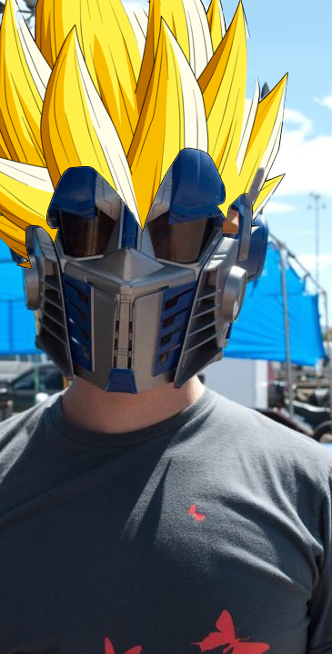

I am a multi-purpose nerd; my biggest obsessions are reading sci-fi and fantasy, really complex board games and tabletop roleplaying games. I was in marching band in high school.
Back when I had free time, my favorite hobbies were origami, chainmail (as in metal rings, not spam) and model building, with a sprinkling of video games and backpacking. Now I have a son who I teach to make weird noises and not take the dogs as role models while I count down the days until he’s big enough to take hiking.
One of my superpowers is a near-total lack of smell. You might think of losing one of your senses as a disability, but I am almost completely immune to being grossed out (infinitely useful as a new parent), and I can basically imagine my food tasting better if I don't like it. On the other hand, food that I don't think has gone bad can be a critical weakness.
You might not believe it and only a handful of people know,but Samuel actually saved the planet! Samuel's secret background as a transformer made him the perfect canidate. When the world was under attack, he did what any hero would do and went Super Saiyan!
 THE WORLD WAS SAVED!!!🎆🍕🎆